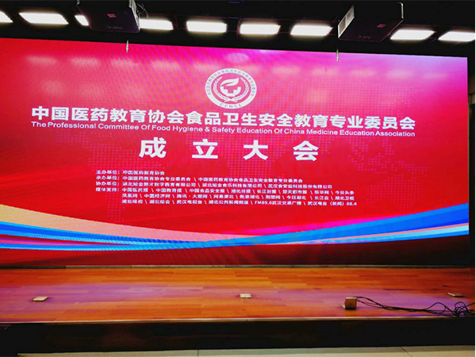
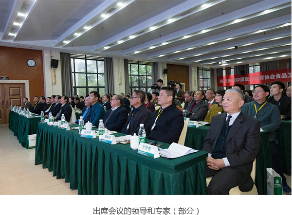
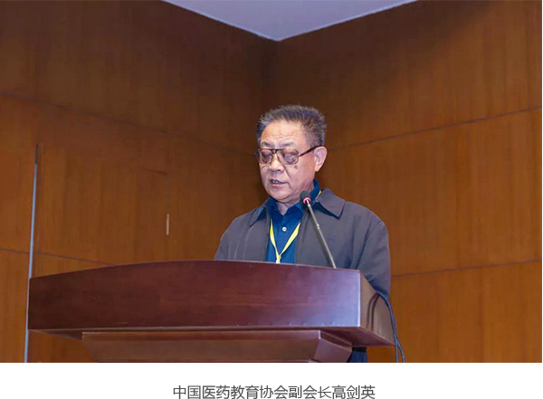
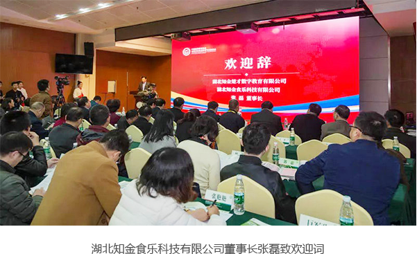
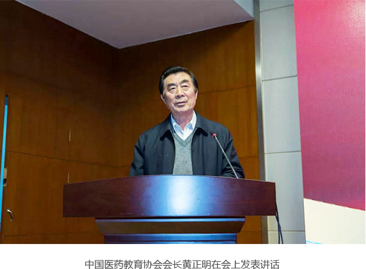
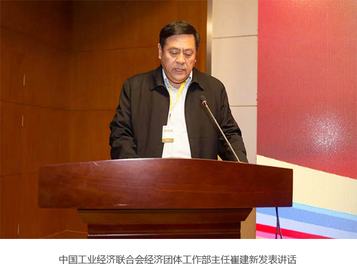
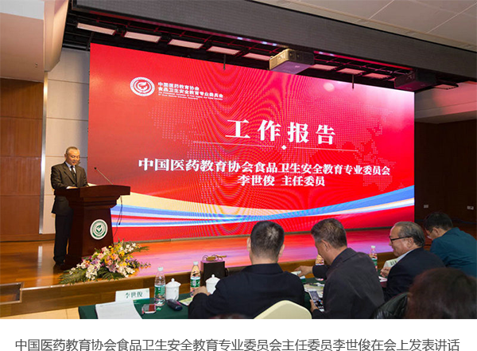

中国医药教育协会食品卫生安全教育专业委员会在武汉成立
时间：2017-12-12 来源：食品卫生安全教育委员会

2017年11月19日，中国医药教育协会食品卫生安全教育专业委员会在武汉华中师范大学举行成立大会。中国医药教育协会会长黄正明、原国家食品药品监督管理局副局长张文周、中国医药教育协会副会长贾万年、中国工业经济联合会经济团体工作部主任崔建新、国家卫生和计划生育委员会综合处处长徐友龙、中国新市场管理中心常务副主任陈朸为、中国医药教育协会副会长王仁杰、原解放军第95医院院长高剑英、原上海海军411医院院长季玉峰、南京军医总医院副院长胡新勇、杨国斌、原哈尔滨武警黄金医院院长陈开安、湖北知金食乐科技有限公司董事长张磊、原武汉市食品药品监督管理局局长李燕、原武汉军星医院院长李世俊等领导和专家150多人出席了会议。

中国医药教育协会是经中华人民共和国民政部批准的国家一级协会，是全国医药教育领域的学术性社团组织，主管部门是国务院国有资产监督管理委员会。新成立的中国医药教育协会食品卫生安全教育专业委员会是中国医药教育协会领导下的专业学术组织和服务机构，为国家二级协会。
中国医药教育协会副会长贾万年主持大会，并介绍出席会议的领导和专家。中国医药教育协会副会长高剑英在会上宣读了《关于成立中国医药教育协会食品卫生安全专业委员会的通知》。

湖北知金食乐科技有限公司董事长张磊致欢迎词。作为中国医药教育协会食品卫生安全教育专业委员会发起单位和理事长单位的负责人，他首先对出席会议的各位领导和专家表示热烈的欢迎。他说：“中国医药教育协会食品卫生安全教育专业委员会的成立，是全国食品卫生安全的一件大事。我们作为专业委员会的发起单位和理事长单位，深感责任重大。我们决心在中国医药教育协会的领导下，开拓进取，努力工作，决不辜负各位领导和专家的期望。我坚信，中国医药教育协会食品卫生安全教育专业委员会的成立必将成为我们相互交流合作、友谊与事业共同发展的良好开端！衷心祝愿食品卫生安全教育专业委员会能为我国的食品卫生安全教育发展揭开崭新的一页。”

黄正明在会上发表了热情洋溢的讲话。他说：“今天，中国医药教育协会食品卫生安全教育专业委员会正式成立了。食品卫生安全教育专业委员会从开始谋划到正式批准成立，历时大半年的时间，整个过程经历了8个环节，整个程序完全是按照国家对一级协会增设二级机构的要求来办理的，可以说，做到了不折不扣。今天，我们从食品卫生安全教育专业委员会成立选举中可以看出，整个选举过程是严肃的、规范的，是符合总会章程要求的，所选的常务委员符合法定程序，选出来的主任委员、副主任委员，秘书长符合组织程序。现在，我宣布，中国医药教育协会食品卫生安全教育专业委员会今天的选举结果真实有效。”

中国工业经济联合会经济团体工作部主任崔建新在讲话中对新成立的食品卫生安全教育专业委员会表示祝贺，希望委员会在中国医药教育协会的领导下，按照协会章程，切实履行职能，为我国食品卫生安全发挥更大的作用。

新当选的中国医药教育协会食品卫生安全教育专业委员会主任委员李世俊在会上讲话。他说，中国医药教育协会食品卫生安全教育专业委员会的成立是食品卫生安全教育领域发展与建设中的一件大事，标志着食品卫生安全教育领域从此有了专门的议事和研究平台。我们将在中国医药教育协会领导下，继续做好以下几个方面的工作：一是积极争取政府主管部门的支持，根据食品安全学科发展动态和趋势，结合中国食品安全教育特点，及时向各级领导机关和有关部门提出发展食品安全学科的咨询意见和建议；二是组织全国性专业、专题学术活动和对外学术交流，总结新经验、新成果、新技术和新方法，评选食品安全学科的优秀论文，积极向有关单位和部门推荐优秀科技人才；三是开展食品安全管理员、食品从业人员培训和考核等，开展食品安全宣传推广，建立食品安全培训教育体系、知识教材体系、第三方评估体系，参与制定食品安全技术操作规范及行业标准化，参与完善食品安全监督管理体系；四是参与食品安全学科重大科技成果的鉴定和评审，并向有关部门提出奖励、推广的意见和建议。

中央和省级新闻媒体也对这一活动给予了高度关注和积极支持。中国食品安全报、中国教育报、湖北日报、长江日报、新华社湖北分社、楚天都市报、武汉晚报等24家媒体派记者采访报道了中国医药教育协会食品卫生安全教育专业委员会成立大会。中国食品安全报社社长兼总编辑朱长学也发来贺信，他代表中国食品安全报社、中国营养保健食品协会、中国医药新闻信息协会向大会表示热烈祝贺，并向与会领导及全体代表表示诚挚的问候。贺信说，中国医药教育协会食品卫生安全教育专业委员会的成立，必将进一步促进我国食品卫生安全教育工作的发展，对提高全民食品安全意识、提升我国食品安全总体水平起到引领推动作用。


 湖北省武汉市珞狮南路397号3W-Coffice 8楼
湖北省武汉市珞狮南路397号3W-Coffice 8楼 官方邮箱：yjfk@yhypx.com 24小时接受邮件投递
官方邮箱：yjfk@yhypx.com 24小时接受邮件投递 官方电话：027-87631428 周一至周五 09:00-18:00
官方电话：027-87631428 周一至周五 09:00-18:00